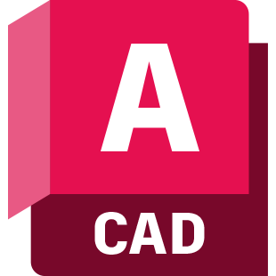
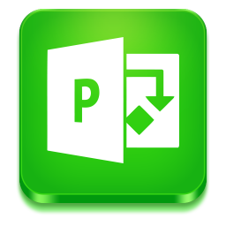
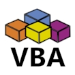

Olá, meu nome é Luiz Carlos. Sou engenheiro mecânico, com mais de vinte anos de experiência; e aprendiz de
desenvolvedor web. Clique nos quadros a seguir para saber mais informações.
Experiência Profissional
Engenheiro de Manutenção/Refrigeração
Empresa: Ar Project Engenharia e Serviços
Local: Contrato Fiocruz Recife
De agosto/2021
Atividades:
- - Planejamento, execução, e controle das manutenções.
- - Manutenção em equipamentos de refrigeração, HAVC, VRF, mecânicos, elétricos e automação.
- - Elaborar planos de manutenção preventiva, corretiva e preditivas.
- - Elaborar normas, manuais e especificações técnicas.
- - Realizar perícia técnica em equipamentos e componentes.
- - Projetos e instalações de novos equipamentos.
- - Implantação da manutenção baseada em confiabilidade.
Engenheiro de Manutenção
White Martins Gases industriais
Local: Central de Confiabilidade NNe
De março/2013 à novembro/2016
Atividades:
- - Coordenar as atividades de manutenção de 10 unidades produtoras de gases industriais (oxigênio, nitrogênio, argônio, dióxido de carbono e hidrogênio), localizadas nas cidades de Cabo-PE, Ipojuca-PE, Recife-PE, Maceió - AL e Fortaleza - CE.
- - Engenharia de manutenção e confiabilidade.
- - Controle de custos da manutenção.
- - Planejamento, execução, e controle das manutenções: mecânica, elétrica, instrumentação, refrigeração, utilidades, automação, veicular e predial.
- - Planejamento das grandes paradas industriais.
- - Projetos industriais e instalações de novos equipamentos
- - Gestão de ativos (ISO 55000).
Coordenador de Manutenção.
Votorantim Cimentos.
Local: Paulista-PE
De janeiro/2011 à março/2012
Atividades:
- - Coordenação, planeamento, execução, e controle das atividades da manutenção industrial geral, que inclui os setores de: PCM; manutenção elétrica; manutenção mecânica, refrigeração, utilidades, automação e controle, confiabilidade e manutenção predial;
- - Implantação do sistema de gestão da garantia da qualidade no departamento;
- - Implantação do sistema de gestão da manutenção
- - Elaborar e aplicar treinamentos;
- - Gestão dos custos e orçamento da manutenção;
- - Planejamento das grandes paradas;
- - Engenharia da manutenção e confiabilidade;
- - Projetos industriais e instalações de novos equipamentos;
- - Gestão das verbas de investimentos da unidade;
- Gestão de ativos (ISO 55000).
Engenheiro Sênior.
White Martins Gases industriais.
Local: Ipojuca-PE
De julho/2000 à janeiro/2011
Atividades:
- - Coordenar as atividades da produção e manutenção, das plantas de gases (oxigênio, nitrogênio, argônio, oxido nitroso, dióxido de carbono e hidrogênio), envolvendo os processos de destilação fracionada criogênica, adsorção catalítica, reação catalítica, eletrolise e membrana de separação; localizadas nas cidades de Cabo-PE, Belo Jardim-PE, Maceió - AL e Fortaleza – CE;
- - Gestão do sistema da garantia da qualidade;
- - Desenvolver e/ou aperfeiçoar os métodos de controle e avaliação do desempeno da produção e dos KPI’s das unidades;
- - Elaborar e aplicar treinamentos;
- - Elaborar e/ou implantar projetos aumento da produtividade e lucratividade, otimização de processos, projetos de six-sigma e eficiência operacional; lean manufacturing;
- - Suporte técnico a área comercial;
- - Controle das modificações do processo e automação dos controles;
- - Planejamento e controle das atividades da manutenção na área de processo;
- - Gestão das verbas de investimentos da unidade;
- - Planejamento das grandes paradas.
- - Elaboração e revisão do fluxo de processo produtivo, P&ID, Hazop, HCCP, FMEA.
Chefe de Manutenção e Projetos.
Celite NE.
Local: Recife-PE
De julho/1998 à outubro/1999
Atividades:
- - Coordenação das atividades dos setores de Projetos, Manutenção mecânica, elétrica, instrumentação, predial e carpintaria;
- - Coordenação dos investimentos (controle das verbas, Projetos e Implantações);
- - Montagens industriais;
- - Elaboração e implantação de um sistema informatizado de controle da manutenção;
- - Gestão das obras de ampliação da indústria, Incremento em 40% na capacidade produtiva.
Engenheiro de Processo.
Companhia industrial de vidros – CIV.
Local: Recife-PE
De março/1995 à julho/1998
Atividades:
- - Projetos de moldes e equipamentos;
- - Desenvolvimento de novos produtos;
- - Alteração e atualização de projetos;
- - Acompanhamento da produção;
- - Coordenação das larchas (Fornos de alívio de tensões e tratamentos superficiais);
- - Instrutor de treinamentos;
- - Auditor interno da qualidade (Normas ISO 9000);
- - Acompanhamento das implantações de novas tecnologias e máquinas no setor;
- - Melhorias e desenvolvimento dos processos;
- - Recepção de técnicos estrangeiros.
Aprendiz de Desenvolvedor web
Decodificador de texto
Challenge 1 Oracle/Alura ONE - Codificador
Este foi o primeira aplicação web que fiz para o curso do Oracle/Alura ONE. É um codificador de texto.
Se você precisar enviar mensagens secretas use.
Jogo da Forca
Challenge 2 Oracle/Alura ONE - Jogo da Forca
Este é uma versão do tradicional joga da forca, onde você tem que acerta as letras da palavra sorteada.
Vamos Jogar!
Formação acadêmica
Engenharia Mecânica
- Universidade de Pernambuco
1989 - 1993
Pós-gradução em Engenharia de Produção
- Universidade Federal de Pernambuco
1999 - 2000
Mestrado em Sistemas e Processos Térmicos - incompleto
- Universidade Federal de Pernambuco
1999 - 2000
Pós-graduação em Engenharia Naval
- Universidade Federal de Pernambuco
2012 - 2013
Skills

- Html 5
-

- CSS
-

- Javascript
-

- Python

- Node JS
- 
- Autocad
- 
- MSProject
- 
- VBA
- Green Belt